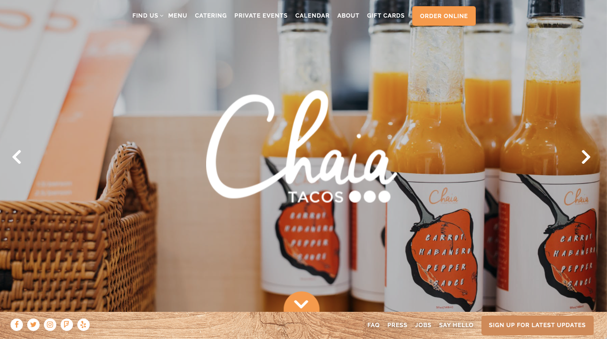
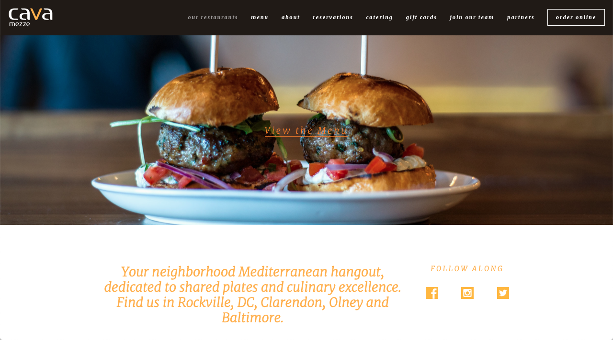
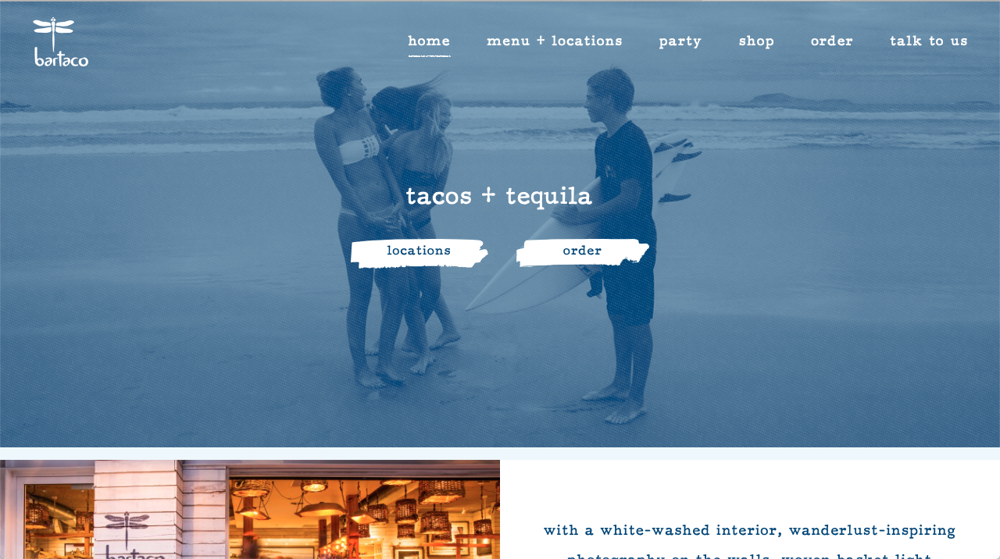
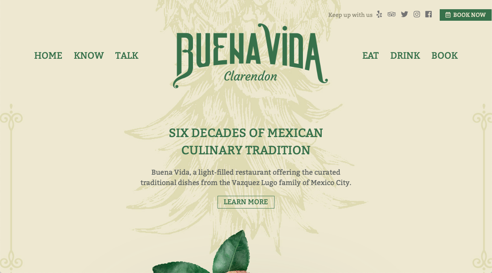

Good Restaurant Websites

This website, Chaia Tacos, is a great example of a simple website. It has a clear color scheme as well as cohesive font. There is an easy contact form in the bottom right hand as well as all their social media. The images all over the website are high quality. The about page is personable, easy to read, and simple. The logo is clearly in the center and explains what to find at this restaurant. The website is also very responsive.

The Cava Mezze website is simple, with cohesive fonts and colors. It has a ‘Follow Along’ section with all their social medias. There are high quality images all throughout the website. The about me page is great because it tells the history of how the restaurant started. The logo is all over the website and matches the color of the pages. However, the contact page can only be found on the about me section. The website is very responsive.

Right away on the website for Bar Taco, you can tell what to expect from this restaurant. It shows food and a good atmosphere. There is a simple two-color scheme, as well as cohesive font, with different sizes to show you where to look first. There is a logo on the page that also follows the font and color scheme. There is an easy to follow contact page. At the bottom of their page is a link to all their social media. There is also high quality, inviting images all throughout the website. The website is also very responsive.

This website, has a simple and neutral color scheme. There is an easy to find contact as well as a place to make reservations. At the bottom of the page there are links for their socials. The about page shows a lot of staff members with pictures, bios and what they do for the restaurant. They have an entire page showing high quality images of their food and the location. The website is also responsive. Their logo is on the top corner and also seen all throughout the website.

This website uses a simple color scheme, as well as font. The logo shown is their name with location. You can tell that they want to you to look them up on all their social media since it is in the top right corner and they have plenty of different socials. The only thing that they don't have is a way to email them or contact them. They have high quality images on their website. On the about us page they have great quality images showing the space for the restaurant. It has a responsive menu.